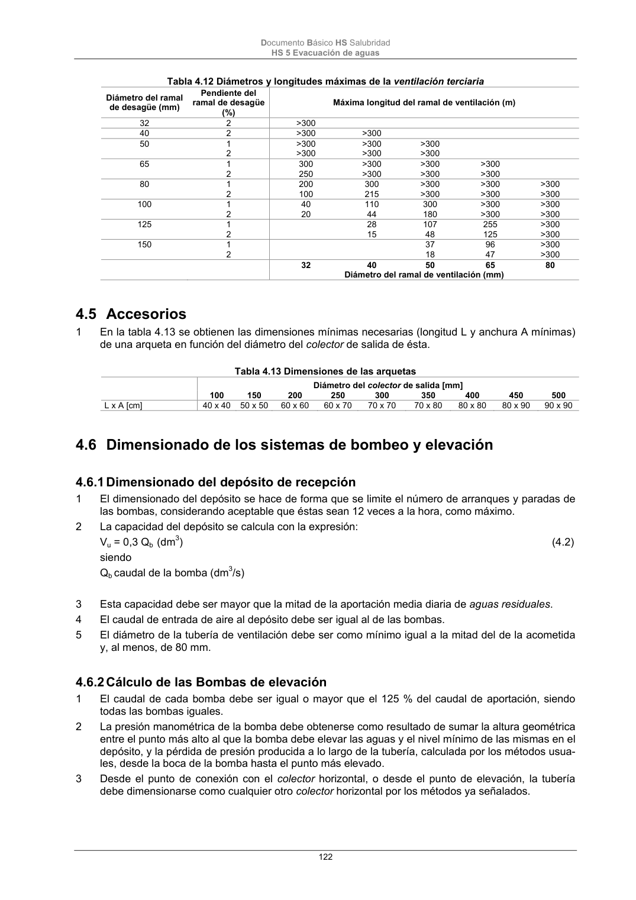

DB-HS Salubridad · edición 2022-06-14 · capa oficial
Documento DB-HS-oficial · SHA-256 del PDF 68df3caacc95f71aee2ec1ba7b2c65ae66155c21e3a8785521b8fdd4fd640d3b
Copia fiel del PDF fuente · Fuente oficial
Ficha de la disposición en la fuente oficial
Formatos: JSON del segmento · Markdown
4.5 Accesorios 1 En la tabla 4.13 se obtienen las dimensiones mínimas necesarias (longitud L y anchura A mínimas) de una arqueta en función del diámetro del colector de salida de ésta. Tabla 4.13 Dimensiones de las arquetas Diámetro del colector de salida [mm] 100 150 200 250 300 350 400 450 500 L x A [cm] 40 x 40 50 x 50 60 x 60 60 x 70 70 x 70 70 x 80 80 x 80 80 x 90 90 x 90
